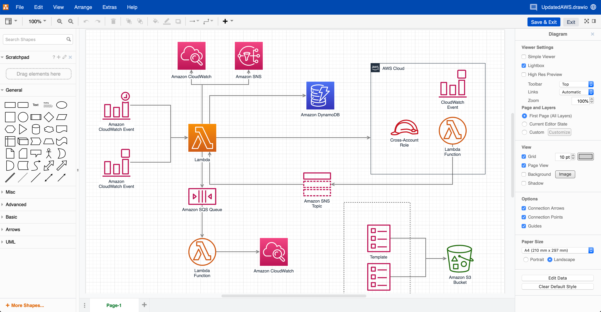
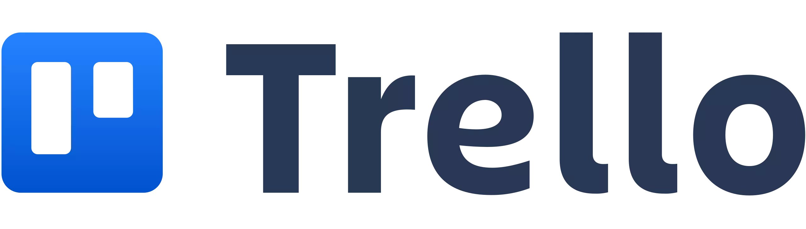
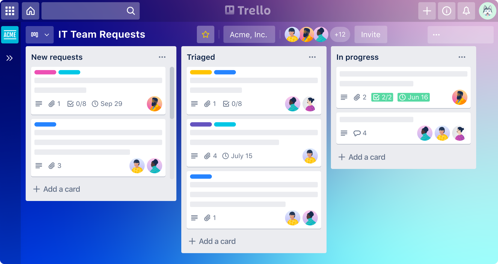
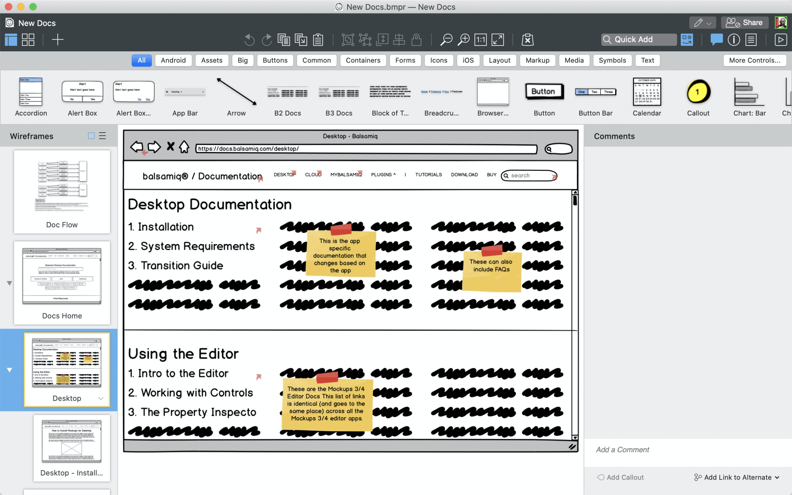
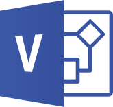

UPPERCASE vahendid
Mis on UPPERCASE vahendid ja mille jaoks neid kasutatakse?
„ülemise taseme" CASE-vahendid (upper CASE tools) toetavad analüüsi ja projekteerimist. Peamiselt on nad kasutusel kasutajanõuete analüüsimisel ja dokumenteerimisel. Nad on ennekõike mõeldud visualiseerimiseks, erinevate skeemide koostamiseks ja ka dokumentatsiooni genereerimiseks. nad toetavad traditsiooniliste diagrammikeelte kasutamist (olem-seos diagrammid, andmemudelid, UML-skeemid, jne). Näiteks: Jira, Confluence, draw.io, Trello, VersionOne, Asana, Balsamiq, Bitbucket, Jenkins, Docker, Microsoft Visio jt.
Milliseid UPPERCASE vahendeid olen ise juba kasutanud
draw.io
Mida tööristaga saab teha
Online tööriist skeemide ja diagrammide loomiseks, sealhulgas UML, vooskeemid ja andmemudelid. Sobib analüüsiks, projekteerimiseks, visuaalsete diagrammide loomiseks ja dokumentatsiooni genereerimiseks.
Töörista kasutajaliidest pilt
Trello
Mida tööristaga saab teha
Projektide haldamine ja ülesannete jälgimine Kanban stiilis. Kasutatakse tiimide koostöös, ülesannete ja projektide visualiseerimisel, ei toeta formaalseid süsteemimudeleid, vaid keskendub projektide haldusele.
Töörista kasutajaliidest pilt
Milliseid UPPERCASE vahenditest veel kasutanud ei ole
Balsamiq
Mida tööristaga saab teha
Prototüüpide ja madala eraldusvõimega juhtimise kaustade loomine. Peamiselt UI (kasutajaliidese) ja veebisaitide prototüüpide loomine, lihtne kasutada.
Töörista kasutajaliidest pilt
Microsoft Visio
Mida tööristaga saab teha
Diagrammide loomise tööriist, mis toetab UML-i, vooskeeme ja muid diagramme. Kasutatakse visuaalsete süsteemide ja protsesside analüüsimiseks ja projekteerimiseks. Pakub laia valikut malle.